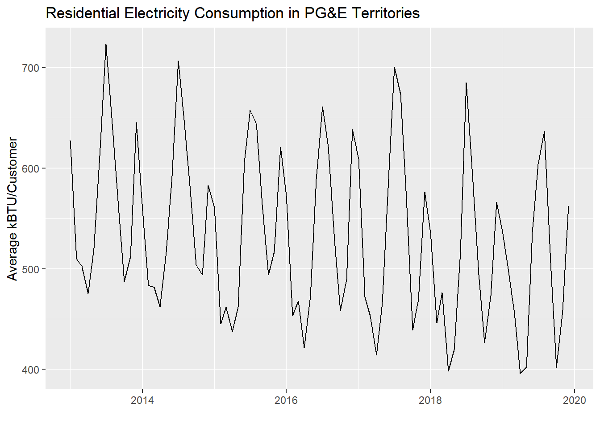

5.3 Autocorrelation
In this section we’ll explore one problem with regression: autocorrelation. This essentially describes “echos” in your data of one form or another, which is to say that there are more similarities between records in your data than you would expect through a truly random sample. For example, if every record in your data were literally duplicated, this would artificially reduce the variation in your data (since there are a lot of unvarying copies). We can quickly examine the effect of this by revisiting a linear regression from before.
library(tidyverse)
library(censusapi)
library(sf)
library(mapview)
library(tigris)
Sys.setenv(CENSUS_KEY="c8aa67e4086b4b5ce3a8717f59faa9a28f611dab")
acs_vars_2019_5yr <-
listCensusMetadata(
name = "2019/acs/acs5",
type = "variables"
)bay_multiple_tract <-
getCensus(
name = "acs/acs5",
vintage = 2019,
region = "tract:*",
regionin = "state:06+county:001,013,041,055,075,081,085,095,097",
vars = c(
"B06009_001E",
"B06009_002E",
"B06009_003E",
"B19001_001E",
"B19001_014E",
"B19001_015E",
"B19001_016E",
"B19001_017E",
"B19001A_001E"
)
) %>%
transmute(
tract = paste0(state, county, tract),
perc_college = 1 - (B06009_002E + B06009_003E) / B06009_001E,
perc_over100k = (B19001_014E + B19001_015E + B19001_016E + B19001_017E) / B19001_001E,
perc_white = B19001A_001E / B19001_001E
) %>%
filter(
!is.na(perc_college),
!is.na(perc_over100k),
!is.na(perc_white)
)##
## Call:
## lm(formula = perc_over100k ~ perc_college, data = bay_multiple_tract)
##
## Residuals:
## Min 1Q Median 3Q Max
## -0.56483 -0.07131 0.01394 0.08257 0.37896
##
## Coefficients:
## Estimate Std. Error t value Pr(>|t|)
## (Intercept) -0.05996 0.01393 -4.305 1.77e-05 ***
## perc_college 0.78996 0.01862 42.435 < 2e-16 ***
## ---
## Signif. codes: 0 '***' 0.001 '**' 0.01 '*' 0.05 '.' 0.1 ' ' 1
##
## Residual standard error: 0.1227 on 1575 degrees of freedom
## Multiple R-squared: 0.5334, Adjusted R-squared: 0.5331
## F-statistic: 1801 on 1 and 1575 DF, p-value: < 2.2e-16Recall that the regression analysis of education and income yielded a regression coefficient of 0.79, with a standard error of 0.019, putting this finding 42 standard errors away from a finding of 0 (i.e., very unlikely). Now let’s create a dataset with duplicates for every record and see what happens:
bay_multiple_tract_duplicated <- rbind(bay_multiple_tract,bay_multiple_tract)
model <- lm(perc_over100k ~ perc_college, bay_multiple_tract_duplicated)
summary(model)##
## Call:
## lm(formula = perc_over100k ~ perc_college, data = bay_multiple_tract_duplicated)
##
## Residuals:
## Min 1Q Median 3Q Max
## -0.56483 -0.07131 0.01394 0.08257 0.37896
##
## Coefficients:
## Estimate Std. Error t value Pr(>|t|)
## (Intercept) -0.059960 0.009846 -6.09 1.27e-09 ***
## perc_college 0.789960 0.013159 60.03 < 2e-16 ***
## ---
## Signif. codes: 0 '***' 0.001 '**' 0.01 '*' 0.05 '.' 0.1 ' ' 1
##
## Residual standard error: 0.1226 on 3152 degrees of freedom
## Multiple R-squared: 0.5334, Adjusted R-squared: 0.5333
## F-statistic: 3604 on 1 and 3152 DF, p-value: < 2.2e-16Notice how the regression coefficient is the same, but the standard error has decreased to 0.013, putting this finding 60 standard errors away from 0. Now, the original finding was already very statistically significant, but with the duplicates, it becomes even more so. You can imagine situations where the difference here may have been the tipping point between rejecting the null hypothesis or not.
Clearly, we wouldn’t expect most data to have literal duplicate copies like this that contribute to autocorrelation, but autocorrelation can more naturally occur in two key dimensions: time and space. If we take a lot of measurements of the same thing in quick succession, then the different measurements in time will have some degree of the same kind of autocorrelation, compared to measurements being randomly taken throughout time.
Let’s create an example of this using PG&E data:
years <- 2013:2019
quarters <- 1:4
pge_data <- NULL
for(year in years) {
for(quarter in quarters) {
filename <-
paste0(
"pge/PGE_",
year,
"_Q",
quarter,
"_ElectricUsageByZip.csv"
)
temp <- read_csv(filename)
pge_data <-
rbind(pge_data,temp)
}
}
pge_avg_kwh <-
pge_data %>%
filter(CUSTOMERCLASS == "Elec- Residential") %>%
group_by(YEAR, MONTH) %>%
summarize(
TOTALCUSTOMERS = sum(TOTALCUSTOMERS, na.rm = T),
TOTALMONTHLYKWH = sum(TOTALKWH, na.rm = T)
) %>%
mutate(
AVGMONTHLYKWH = TOTALMONTHLYKWH/TOTALCUSTOMERS,
DATE =
paste(
YEAR,
MONTH,
"01",
sep="-"
) %>% as.Date()
)pge_avg_kwh %>%
ggplot(
aes(
x = DATE,
y = AVGMONTHLYKWH
)
) +
geom_line() +
labs(
x = "",
y = "Average kBTU/Customer",
title = "Residential Electricity Consumption in PG&E Territories"
)To formally measure autocorrelation, we perform regression on each consecutive pair of values in this time series: Jan 2013 vs. Feb 2013, Feb 2013 vs. Mar 2013, etc. Make sure your data is already ordered temporally, and make sure there are no lingering groupings from a previous group_by() that may distort the lag creation.
pge_avg_kwh <- pge_avg_kwh %>%
arrange(DATE) %>%
ungroup() %>%
mutate(
AVGMONTHLYKWH_lag = c(AVGMONTHLYKWH[-1],NA)
) %>%
head(-1)Note that we created a “lagged” variable by referring to an existing column, removing the first value with [-1], and then adding an extra NA at the end to preserve the same total number of values. Then, we used head(-1) to keep the top of the dataset with the exception of 1 row at the very end of the dataset, which we can’t use for regression because it’s not a complete pair. We also needed to ungroup() because the dataframe still had a “grouping” by YEAR leftover from a previous chunk; it’s not always obvious when this occurs, so in general it’s a good idea to ungroup() after a multi-variable grouping.
pge_avg_kwh %>%
ggplot(
aes(
x = AVGMONTHLYKWH,
y = AVGMONTHLYKWH_lag
)
) +
geom_point() +
geom_smooth(method = "lm")
Let’s use cor() to get the correlation between these two variables (which you’ll recall is the square root of R-squared, and something we used corrplot() to get previously).
## [1] 0.5325213Keep in mind that the correlation between year and AVGMONTHLYKWH is a different measure from the correlation between AVGMONTHLYKWH and its lag.
We can get a similar result more simply using the acf() function, which stands for “autocorrelation function”. We can provide the original (ordered) vector of values and get correlations for different amounts of “lag”, which is the time distance between variables.
##
## Autocorrelations of series 'pge_avg_kwh$AVGMONTHLYKWH', by lag
##
## 0 1 2 3 4 5 6 7 8 9 10
## 1.000 0.533 -0.150 -0.466 -0.311 0.083 0.309 0.119 -0.250 -0.438 -0.205
## 11 12 13 14 15 16 17 18 19
## 0.413 0.780 0.462 -0.105 -0.397 -0.308 0.018 0.242 0.092Note that the manual example we did was a lag of “1” time increment between the value and its potential predictor, and the correlation we got closely matches the acf() result for one lag. The very first line, with a lag of 0, represents correlation of a variable directly with itself, which we would expect to always be 1. Note that towards the right, some lags like 6, 11-13, and, in the negative correlation direction, 3, 9, 15, breach the blue lines, which represent the 95% confidence interval around a correlation of 0. This means that any lines that breach this interval can be considered “statistically significant” signals of temporal autocorrelation. These signals seem related to the cyclical nature of the PG&E energy data, following usage trends at different scales, weeks and beyond.
So, is this autocorrelation a problem? Maybe, if you are directly making use of this PG&E data, along with other data like population characteristics at the ZIP code level, to try to understand the relationship between population characteristics and energy use. In that case, adjacent months begin to take on some of the effect of the “duplicate records”, and artificially increase the closeness of your observations, leading you to more likely make false positive claims about relationships.
But if you’re instead trying to predict energy use in the future, autocorrelation is very much your friend. The strong correlations above essentially let you create a better estimator of unknown values, since you can build off of some expected relationship between a value and the value 1 day ago, value 2 days ago, value 3 days ago, etc. In general, we can benefit from time fundamentally being a dimension of change, such that states that are closer in time to each other are by their very nature more similar than states that are farther in time from each other.
Now let’s switch from considering the temporal dimension to considering the spatial dimension. Here we can expect a similar fundamental principle, first penned in 1970: “Everything is related to everything else, but near things are more related than distant things” (Tobler).
Let’s use the ACS census tract education data we were using before, and come up with a simple way to relate a census tract with its “lag”, which in this case is neighboring census tracts in space. “Neighboring” can be defined a number of ways, but as the simplest version, let’s first identify the nearest census tract to every census tract, based on centroids.
ca_tracts <- tracts("CA", progress_bar = F)
bay_education_centroid <- bay_multiple_tract %>%
left_join(
ca_tracts,
by = c("tract" = "GEOID")
) %>%
st_as_sf() %>%
st_centroid() %>%
select(tract, perc_college)We can use an sf function, st_nearest_feature(), which will automatically return the index (row number) of the nearest other row. We can use it similar to how we use st_area(.), with a period to denote the pipeline object itself.
bay_education_lag <- bay_education_centroid %>%
mutate(
nearest = st_nearest_feature(.)
) %>%
left_join(
bay_education_centroid %>%
st_drop_geometry() %>%
transmute(
index = row_number(),
perc_college_lag = perc_college
),
by = c("nearest" = "index")
)Then, we left_join() the original data, but without geometries, and with a field called index which will hold the original row number, using row_number(). When we join using this index, we are able to associate a census tract with its neighboring census tract’s education (labeled perc_college_lag).
Now we can create a scatter plot, and formally calculate the slope of the relationship between the educational attainment of neighboring census tracts:
bay_education_lag %>%
ggplot(
aes(
x = perc_college_lag,
y = perc_college
)
) +
geom_point() +
geom_smooth(method = "lm")##
## Call:
## lm(formula = perc_college ~ perc_college_lag, data = bay_education_lag)
##
## Residuals:
## Min 1Q Median 3Q Max
## -0.43773 -0.05664 0.01103 0.06009 0.53689
##
## Coefficients:
## Estimate Std. Error t value Pr(>|t|)
## (Intercept) 0.18122 0.01126 16.10 <2e-16 ***
## perc_college_lag 0.76293 0.01524 50.07 <2e-16 ***
## ---
## Signif. codes: 0 '***' 0.001 '**' 0.01 '*' 0.05 '.' 0.1 ' ' 1
##
## Residual standard error: 0.1032 on 1575 degrees of freedom
## Multiple R-squared: 0.6142, Adjusted R-squared: 0.6139
## F-statistic: 2507 on 1 and 1575 DF, p-value: < 2.2e-16This could be thought of as a kind of spillover effect, where an increase of 1% in a neighboring census tract is associated with an increase in 0.76% in one’s own census tract. But keep in mind that the direction of spillover can’t be determined in this way. Or perhaps there is some other influence that is “spilling over” into both neighbors. In this case, maybe neighboring census tracts are often in the same school district, or a single university or employment anchor attracts higher-education households to the vicinity.
“Spillover” in one form or another is a more complicated phenomenon than the pure directionality of time that we considered before. Here, we are putting our finger on the importance of spatial proximity in urban systems.
Again, whether this is good or bad depends on your interests. If we are missing data for some census tracts and need to fill it in, high spatial autocorrelation suggests that we can have a higher confidence in using neighboring values to impute the missing value. But if we’re trying to associate different variables, like we’ve been doing in the previous two chapters, then spatial autocorrelation will have the tendency to make relationships more certain than they appear.
So how might we remove spatial autocorrelation if we think we want to? Building off our simplified example, we could simply try to “control for” the spatial lag variable and see how that rebalances the regression coefficients of our other explanatory variables.
First, a mutiple regression without considering spatial autocorrelation, this time using income and race to predict education attainment:
##
## Call:
## lm(formula = perc_college ~ perc_over100k + perc_white, data = bay_multiple_tract)
##
## Residuals:
## Min 1Q Median 3Q Max
## -0.36809 -0.06192 0.00420 0.06002 0.48761
##
## Coefficients:
## Estimate Std. Error t value Pr(>|t|)
## (Intercept) 0.29748 0.00903 32.94 <2e-16 ***
## perc_over100k 0.58936 0.01509 39.05 <2e-16 ***
## perc_white 0.22504 0.01197 18.79 <2e-16 ***
## ---
## Signif. codes: 0 '***' 0.001 '**' 0.01 '*' 0.05 '.' 0.1 ' ' 1
##
## Residual standard error: 0.1025 on 1574 degrees of freedom
## Multiple R-squared: 0.6189, Adjusted R-squared: 0.6185
## F-statistic: 1278 on 2 and 1574 DF, p-value: < 2.2e-16The regression coefficient on perc_over100k is 0.59, and on perc_white is 0.23. Now let’s bring in perc_college_lag as an explainer.
bay_multiple_tract_lag <-
bay_multiple_tract %>%
left_join(
bay_education_lag %>%
select(tract, perc_college_lag)
)
model <- lm(perc_college ~ perc_college_lag + perc_over100k + perc_white, bay_multiple_tract_lag)
summary(model)##
## Call:
## lm(formula = perc_college ~ perc_college_lag + perc_over100k +
## perc_white, data = bay_multiple_tract_lag)
##
## Residuals:
## Min 1Q Median 3Q Max
## -0.28241 -0.04585 -0.00005 0.04701 0.37175
##
## Coefficients:
## Estimate Std. Error t value Pr(>|t|)
## (Intercept) 0.132373 0.009191 14.40 <2e-16 ***
## perc_college_lag 0.464078 0.015828 29.32 <2e-16 ***
## perc_over100k 0.373474 0.014200 26.30 <2e-16 ***
## perc_white 0.124686 0.010222 12.20 <2e-16 ***
## ---
## Signif. codes: 0 '***' 0.001 '**' 0.01 '*' 0.05 '.' 0.1 ' ' 1
##
## Residual standard error: 0.08248 on 1573 degrees of freedom
## Multiple R-squared: 0.7536, Adjusted R-squared: 0.7531
## F-statistic: 1604 on 3 and 1573 DF, p-value: < 2.2e-16The regression coefficient on perc_over100k has gone down from 0.59 to 0.37, and on perc_white has gone down from 0.23 to 0.12. In other words, “controlling for the explanatory power of neighbors”, the explanatory power of income and race seems to have decreased. Or, controlling for income and race, having neighbors with high educational attainment seems to have some relationship with your own educational attainment.
I’ll now demonstrate more formal ways to do the previous three steps. First, to find neighbors, instead of just using the one closest neighbor by centroid distance, we can find all bordering neighbors using poly2nb() from the spdep package, and then derive spatial weights based on how many neighbors there are (i.e., four neighbors would each contribute 25% of their perc_college to the lag variable) using nb2listw():
bay_multiple_tract_wts <- bay_multiple_tract %>%
left_join(
ca_tracts,
by = c("tract" = "GEOID")
) %>%
st_as_sf() %>%
poly2nb() %>%
nb2listw()Then we can calculate “Moran’s I”, a more formal version of the regression coefficient we did between census tracts and their neighbors, using moran.test(), in which we supply a dataframe variable and the spatial weights we just created:
##
## Moran I test under randomisation
##
## data: bay_multiple_tract$perc_college
## weights: bay_multiple_tract_wts
##
## Moran I statistic standard deviate = 48.196, p-value < 2.2e-16
## alternative hypothesis: greater
## sample estimates:
## Moran I statistic Expectation Variance
## 0.7012052501 -0.0006345178 0.0002120552The Moran I statistic, 0.70, is similar to the slope of 0.76 we calculated when using just one nearest neighbor.
Lastly, one formal technique for controlling for spatial autocorrelation is lagsarlm() (“lag, spatial auto-regressive, linear model”) from the spatialreg package. If you accept the demonstrations above, then you can just trust this function to be factoring in the explanatory power of multiple nearest neighbors.
library(spatialreg)
lag_model <- lagsarlm(
perc_college ~ perc_over100k + perc_white,
data = bay_multiple_tract,
listw = bay_multiple_tract_wts
)## (Intercept) perc_over100k perc_white
## 0.03492313 0.33148292 0.10627475## rho
## 0.6329347You can observe that the regression coefficients for perc_over100k and perc_white are pretty similar to our previous example. The regression coefficient for the “spatial lag” variable is shown here as Rho, 0.63. One’s tract’s educational attainment seems to be strongly explained by the shared variation in income, race, and one’s neighbors’ educational attainment.